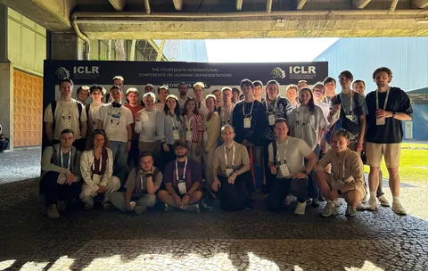
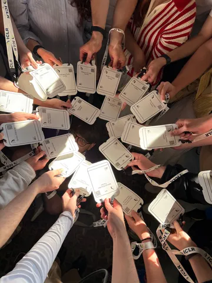
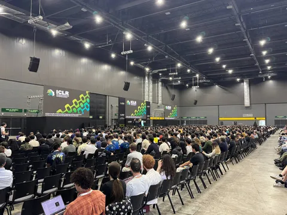
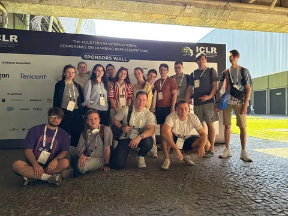

В Бразилии стартовала она — 14-я конференция International Conference on Learning Representations. В этом году на ICLR приняли больше 5 тысяч статей (из почти 19 тысяч заявленных), что в полтора-два раза больше, чем в предыдущие годы.
В первый день конференции удача была на нашей стороне: ребятам удалось попасть в окно между очередями на получение бейджей — и на всё ушло не больше пяти минут. Так что они уже успели посетить первые постеры и послушать доклады.
Напоминаем, что представим и свои исследования: привезли шесть статей от Yandex Research на основную программу и ещё одну — на воркшоп ICBINB. Ждём фоторепортажей с постеров!
#YaICLR26
ML Underhood



